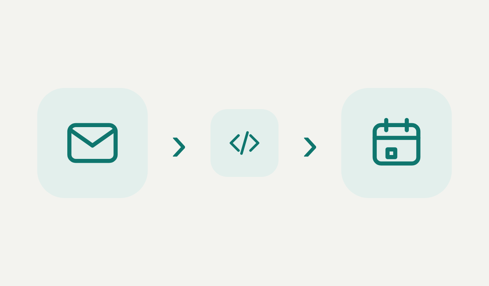
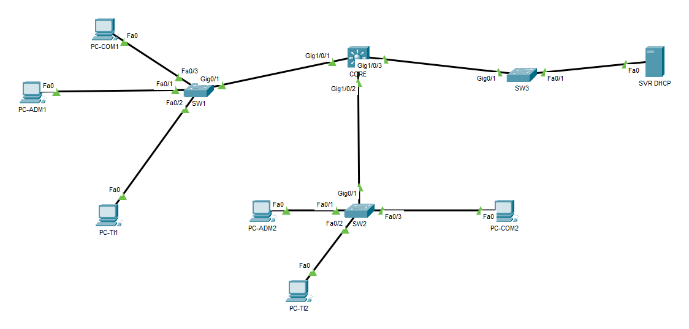

Elias de Siqueira
Suporte e infraestrutura de TI
Oi! Sou profissional de TI com experiência em suporte e infraestrutura, do atendimento ao usuário à administração de Active Directory, Microsoft 365, Hyper-V e backups.
Neste blog, documento meus laboratórios de redes e sistemas: o cenário, a topologia, as configurações, os testes com as saídas reais e os problemas que resolvi no caminho.
Posts
-
Automação de boletos: do e-mail ao lembrete no calendário
Uma automação que lê o boleto recebido por e-mail, identifica o vencimento e cria um lembrete no calendário 1 dia antes. Conto o problema, como o fluxo funciona e o próximo passo.

-
Infraestrutura de rede corporativa: VLANs, roteamento e DHCP no Packet Tracer
Montei a rede de uma empresa fictícia com quatro setores, com VLANs, roteamento entre VLANs num switch multicamada e DHCP centralizado. Conto como configurei, como testei e os três problemas que apareceram no caminho.

Em breve
- Windows Server e serviços de domínio: AD DS, DNS, DHCP, GPO e File Server em preparação
- SCCM e implantação de sistemas via PXE em preparação